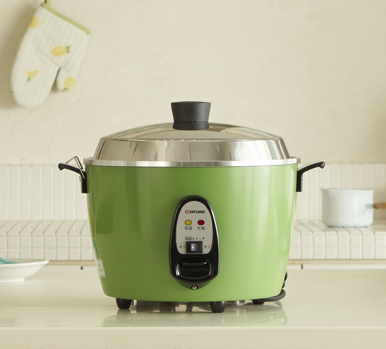
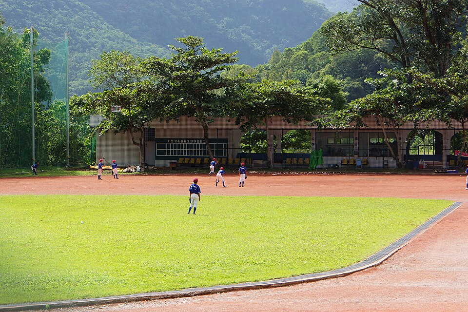
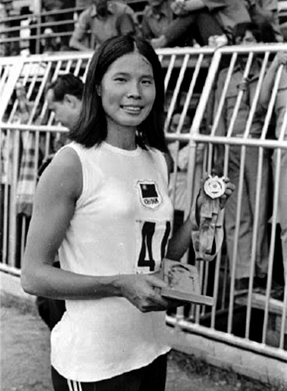
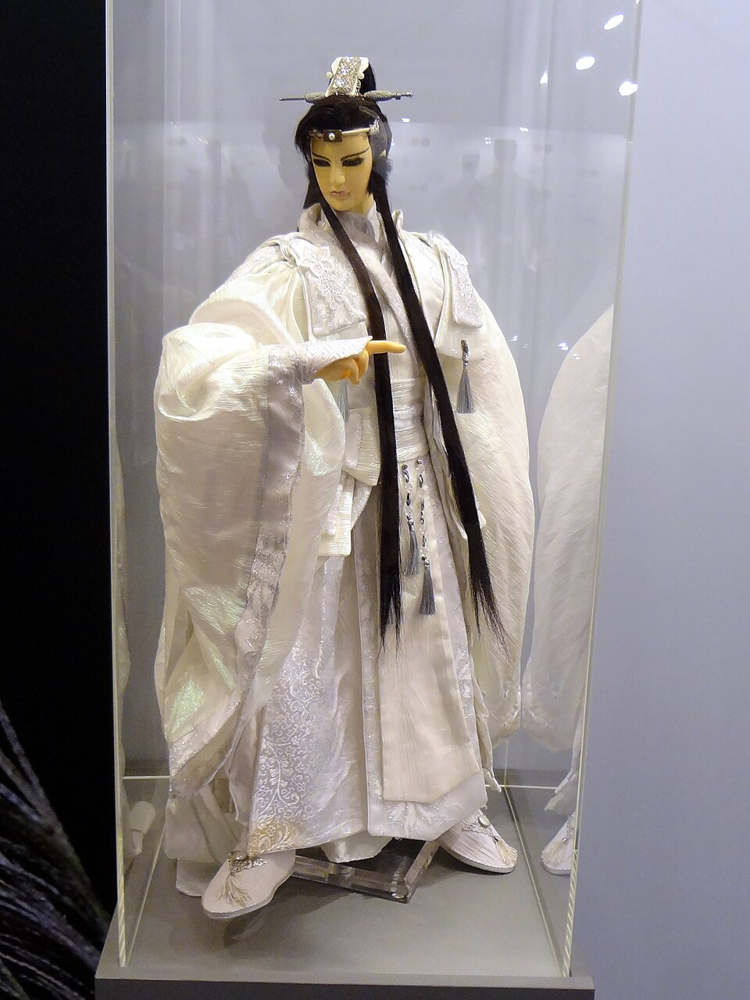

從時光機看見我們的生命韌性
您的一生，
就是最精彩的教科書。
喚回一段時光、
一張熟悉的臉
前奏一下，
就回到那一年
說出來，
轉折就成了力量
由職能治療師引導，有系統地梳理生命中的重要轉折
那一年，我幾歲？在哪裡？
照片裡，還有誰？
按下快門前，發生了什麼事？
沒帶照片的同學，請形容一張「心裡的照片」
那一年，您幾歲？
人在哪裡？
是在哪一年的雙十節開播的？
大同電鍋，是從哪一年開始生產的？

照片：Thankqall，CC BY-SA 4.0（Wikimedia Commons）。
這場轟動全台的比賽，比數是多少？

對手為日本關西地方選拔的少棒明星隊，並非當年的世界冠軍隊。照片：今日的台東紅葉球場，lienyuan lee，CC BY 3.0。
小時候，您都玩什麼？
他們是用什麼練球的？
沒有資源的時候，我們怎麼想辦法？
華視懷舊頻道〈「紅葉少棒隊」傳奇小將！當初訓練艱苦 球棒就地取材？〉
十項全能銀牌，
台灣第一面奧運獎牌。

女子 80 公尺跨欄銅牌。
拿下台灣第一座
世界少棒冠軍。
照片：楊傳廣 1960、紀政 1970，皆為公有領域（Wikimedia Commons）。
十項全能，是哪十項？
他是怎麼從台東走到羅馬的？
我年輕時，最拚的一件事是什麼？
運動部 Taiwan Sports〈口述歷史：亞州鐵人 楊傳廣〉
黃俊雄布袋戲《雲州大儒俠》在台視首播。您最記得哪一個角色？

1970 年 3 月 2 日首播，1974 年停播。「收視率九成多」為流傳說法，沒有原始調查可查證。照片：Solomon203，CC BY-SA 4.0。
閉上眼睛，先聽聲音就好
認得出是哪個角色嗎？
那時候，是在誰家看的電視？
台灣的布袋戲（李國安）〈雲州大儒俠史艷文第1集–黃俊雄電視布袋戲〉全長約 1 小時，請課前先選好要播的段落。
等一下回來，換大家說自己的故事
人稱「帽子歌后」的是哪一位？
歌名是什麼？誰唱的？
那時候我在做什麼？
想到誰？
震央在南投集集。
走過來的人，
本身就是韌性的證明。
這一頁可能勾起難過的回憶。學員可以選擇只聽不說；有人情緒起伏時，先停下來陪他。
先深呼吸；不想看的同學可以閉上眼
想起了誰？
那之後，我們變得更會做什麼？
公共電視-我們的島〈【看當年】九二一大地震｜1999年〉。畫面可能讓人難過，播放前請先告知學員，可以選擇不看。
左邊是出生，
右邊是今天
三個最開心、
最得意的時刻
三個最辛苦、
卻走過來的時刻
挑一個轉折，
說給同伴聽
低谷旁邊請寫一句：那時候，是什麼幫我撐過去？
不打斷，讓對方把話說完
多問一句：「後來呢？」
聽完說：「謝謝您告訴我。」
在歡笑與淚水中，為彼此的生命故事喝采
就是我們今天做的事：用照片、音樂和故事，把一路走來的經過串起來。
整體來看是中等程度的幫助；每個人的感受不一樣，舒服最重要。
Pinquart & Forstmeier (2012). Aging & Mental Health, 16(5), 541–558.
哪一段年紀的記憶，想起來的最多？
Rubin & Schulkind (1997). Memory & Cognition, 25(6), 859–866.
被勾起來的心情，大多是正面的。
Janata, Tomic & Rakowski (2007). Memory, 15(8), 845–860.
想起往事後，覺得和別人更親近、更肯定自己，也覺得人生更有意義。
Wildschut et al. (2006). JPSP, 91(5), 975–993；Routledge et al. (2011). JPSP, 101(3), 638–652.
年紀大了常回想往事，是正常的心理歷程；把一生重新整理，有助於接受自己走過的路。
Butler RN (1963). Psychiatry, 26, 65–76.
兩個月、共八次；心理上的幸福感也提高，追蹤到三個月後。
Chiang et al. (2010). Int J Geriatr Psychiatry, 25(4), 380–388.
在照護機構裡，生活品質有小幅改善；對記性的幫助很有限。
Woods et al. (2018). Cochrane Database Syst Rev, CD001120.
重點是有人聽、有人回應。想到難過的事，可以停下來，不必勉強說完。
看記性、判斷、興趣
有沒有明顯改變。
它是提醒，不是診斷；
自己填容易偏高。
或打失智症關懷專線，
問附近的共照中心。
Galvin et al. (2005). Neurology, 65, 559–564；台灣版 Yang et al. (2011)。量表題目需授權使用，本簡報不轉載題目內容。
老照片、老地圖、地方故事，上網就能查。
tcmb.culture.tw
國家圖書館。老明信片、舊報紙、家族文獻。
tm.ncl.edu.tw
老電影、新聞片的保存與放映。
tfai.org.tw
台灣失智症協會。免付費，週一至五 9:00–21:00。
各縣市都有，提供評估、諮詢和社區據點的課程。
很多據點有懷舊、說故事的活動，可以繼續參加。
資訊查核於 2026 年 11 月。國家文化記憶庫現由國立臺灣歷史博物館營運。請換上本地據點的名稱與電話。
我這輩子學到最重要的一件事
我最想讓孫子知道的一件事
我想對年輕時的自己說
把生命線拿給一位家人看
在老照片背面寫下時間和人名
請晚輩幫忙，錄下一段您說的故事
讓珍貴的台灣記憶，永續傳承